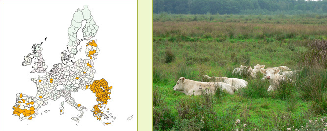

Highlights
- Agriculture uses over 50% of the land
- Relatively high amount of permanent pasture
- Strong structural change of agriculture
- Probably shortage of alternative employment for labour
surplus
- Migration of rural population elsewhere or growth
of unemployment
